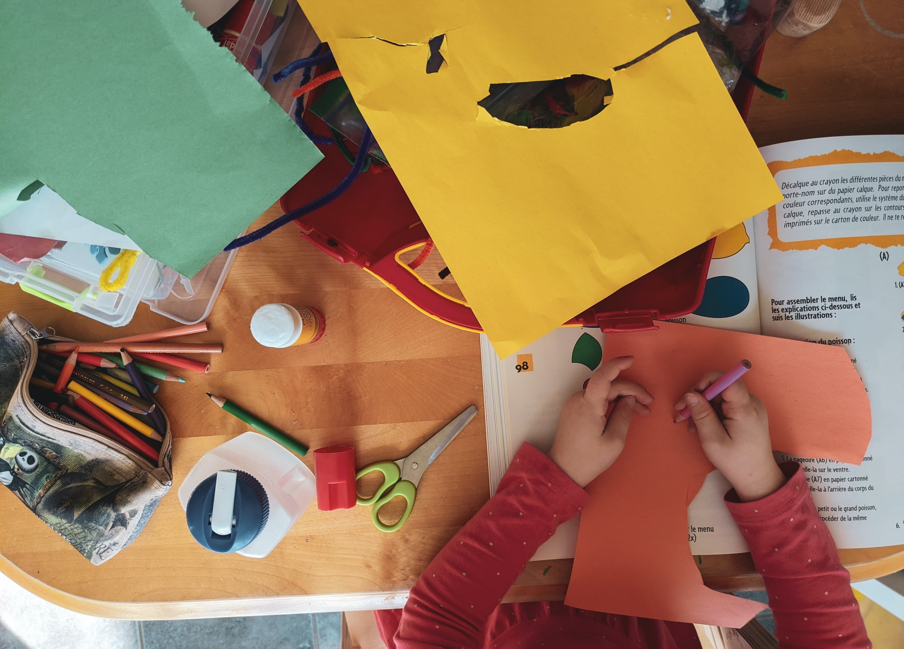
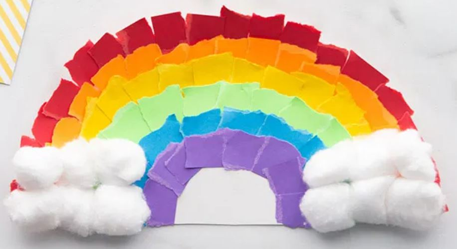

Collection of Crafts
Home
Reuse & Play
Seasonal Fun
Learn by Craft
Rainy Day Projects
Picture Board
Vote
Stay In Touch

Rainy Day Projects
Paper Plate Rainbow
Inspiration from
thebestideasforkids
Skill Level: Easy
Time to Craft: 1 hour
Adult Supervision: No

1
What You Need
White paper plate
A4 coloured paper - red, orange, yellow, green, blue and purple
Cotton balls
PVA glue
2
Let's Make
Take the paper plate and fold in half. Tear to make a semi-circle.
Using the coloured paper, tear these up into small squares keeping the colours separate.
With the red paper, glue these to the outside edge following the curve of the plate.
Work your way inwards creating rows of colour, we used orange, then yellow, green, blue and purple.
Finally with the cotton balls, stick these to the bottom of the coloured paper on both ends, here is your
Paper Plate Rainbow
.
3
Let's Play